Mercedes-AMG GLE купе
Невозможно не заметить: откройте для себя новое мощное купе от AMG
Главные особенности автомобиля
Понемногу ото всех. Лучшее из всего
Говорят, противоположности притягиваются, и новое купе Mercedes-AMG GLE 63 4MATIC+ объединяет экстремальную спортивность, первоклассные свойства внедорожников и абсолютную повседневную практичность. Но как бы вы его ни использовали, GLE 63 всегда проявляет свой настоящий характер Mercedes-AMG.
Дизайн экстерьера
Угловатый и прямолинейный дизайн экстерьера, спортивный вид
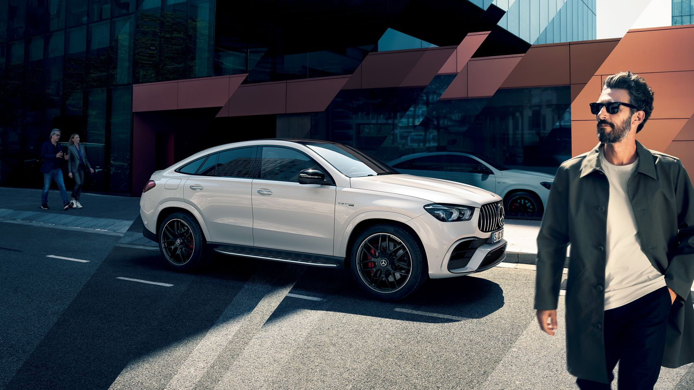Характерная передняя часть AMG
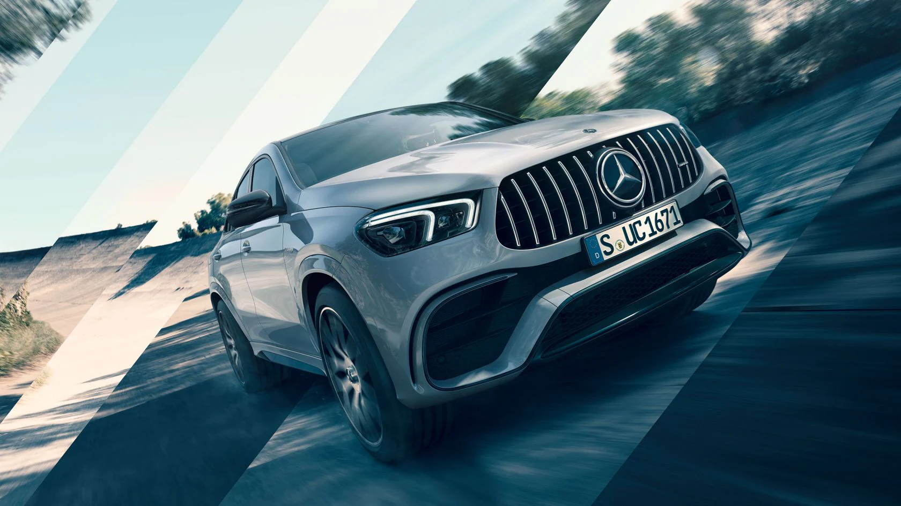Динамика AMG с первого взгляда: окрашенный в цвет кузова передний бампер в форме крыла реактивного самолета в сочетании с черными воздухозаборниками сразу демонстрирует спортивный характер купе GLE 63 S.
Мускулистая задняя часть
Мощное завершение: по-новому оформленный задний бампер с такими свойственными AMG деталями, как эффектный диффузор черного цвета и молдинг цвета «серебристая тень», довершает атлетичный облик автомобиля.
Система выхлопа AMG
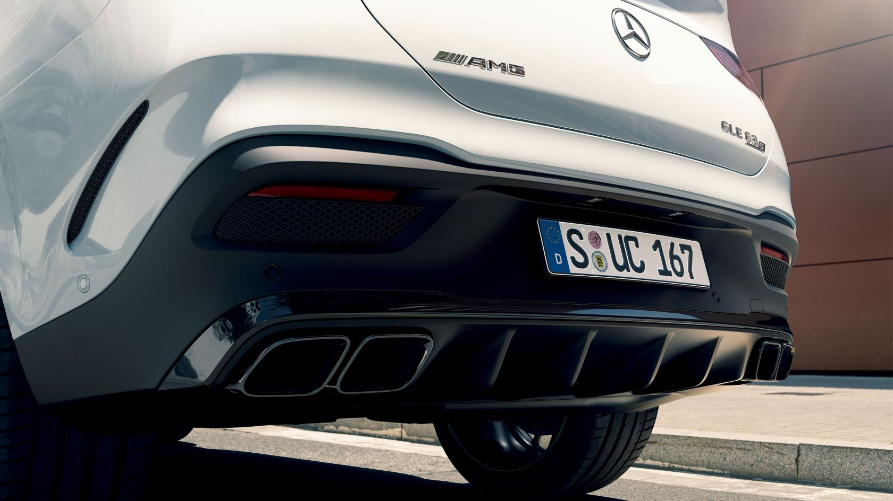Убедительная демонстрация мощности и спортивного характера автомобиля – выхлопная система с двумя парами патрубков четырехугольной формы c характерным рифлением.
Дизайн интерьера
Элегантный интерьер AMG: все сочетается идеально
Салон нового купе Mercedes-AMG GLE S 63 4MATIC+ идеально соответствует стилю мощного спортивного автомобиля. Характерные для AMG элементы комплектации усиливают ощущение динамики и добавляют салону комфорта.
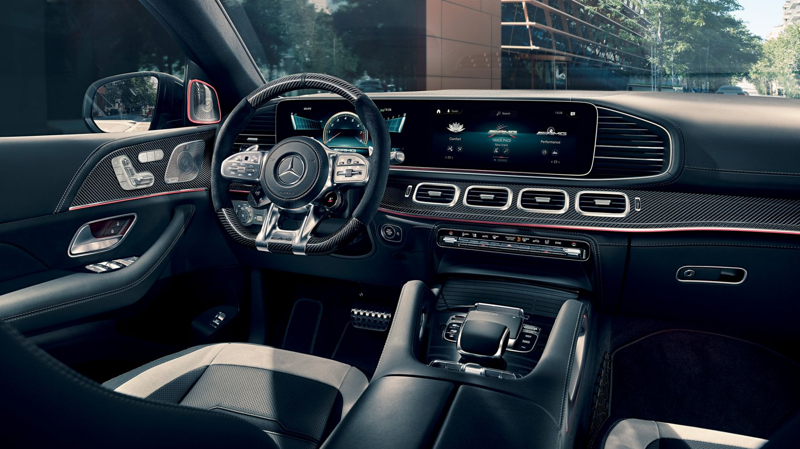Элементы интерьера с отделкой благородной кожей наппа AMG
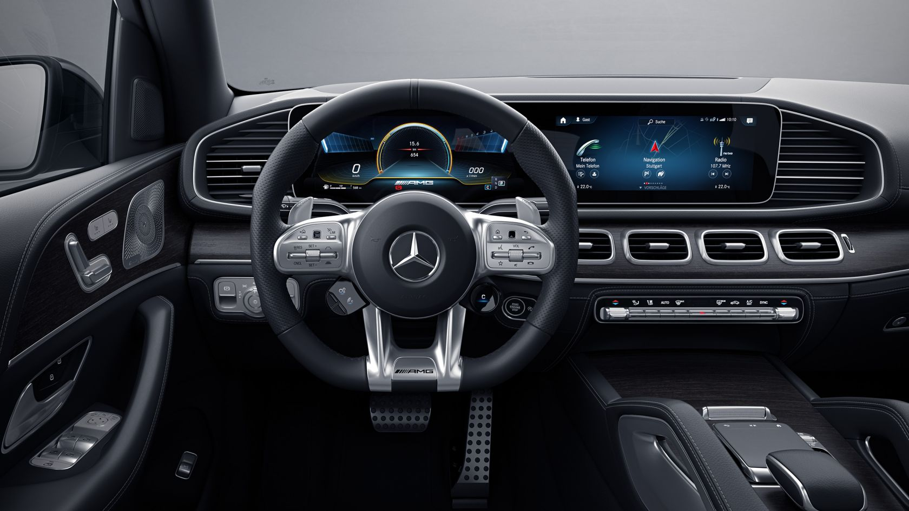Исключительная роскошь в серийной комплектации: многочисленные элементы с отделкой из высококачественной кожи наппа придают интерьеру Mercedes-AMG эксклюзивность и элегантность. Благодаря расширенному выбору опциональных материалов и цветов вы вряд ли ощутите какие-либо ограничения для ваших индивидуальных предпочтений.
Передние сиденья AMG
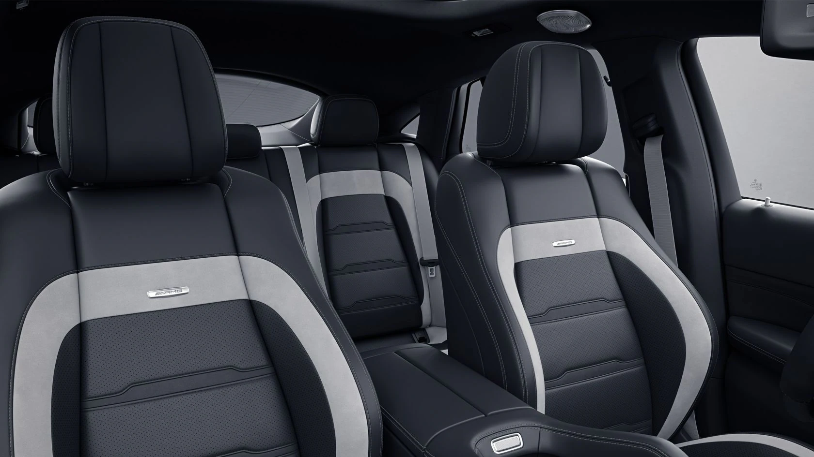Передние сиденья с оптимизированной боковой поддержкой и характерным для AMG контуром украшены шильдиком «AMG», расположенным на спинках. В серийной комплектации они отделаны высококачественной черной кожей наппа AMG. Множество других вариантов цветовой отделки и материалов доступны опционально по выбору.
Панорамная крыша со сдвижным люком
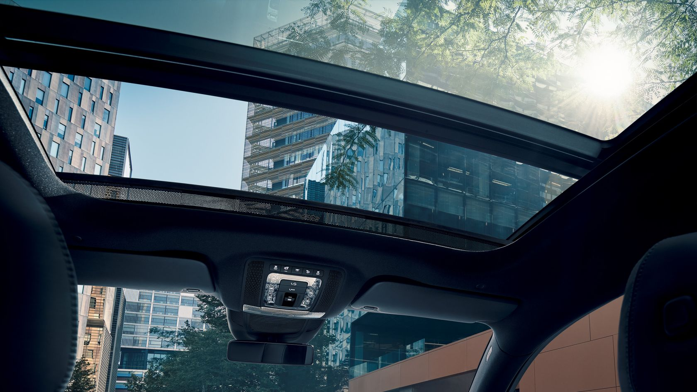Широкая опциональная панорамная крыша со сдвижным люком добавляет дизайну купе GLE 63 S эксклюзивности и ощущения свободы. Во время поездок она создает светлую и вдохновляющую атмосферу автомобиля с открытым верхом.
Впечатляющая мощь
Добро пожаловать на вершину спортивности
Новый Mercedes-AMG GLE 63 S 4MATIC+ купе переключился на более высокую передачу. Идеальное взаимодействие двигателя и полного привода обеспечивает еще более впечатляющее ускорение и отличную курсовую устойчивость автомобиля. А пакет AMG Driver’s Package приблизит вас к спортивным показателям.
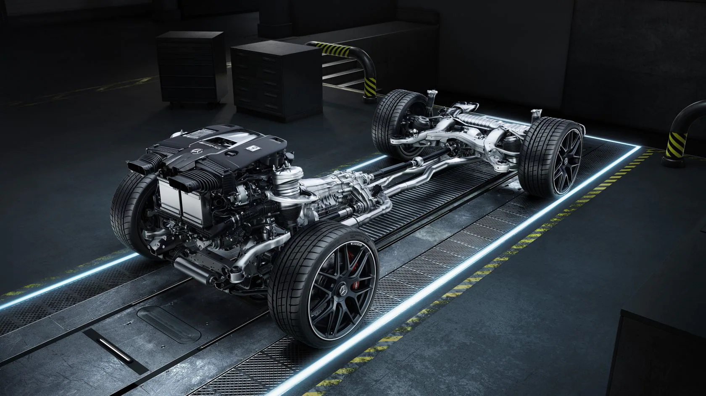4-литровый двигатель V8 с двойным турбонаддувом
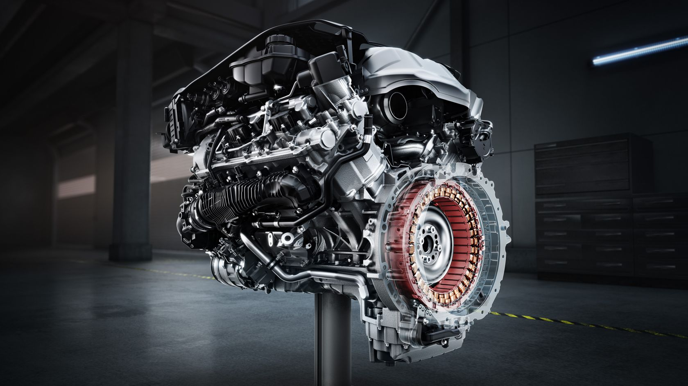4-литровый двигатель V8 с двойным турбонаддувом и полный привод AMG Performance 4MATIC+ катапультируют купе Mercedes-AMG GLE 63 S 4MATIC+ в новый вариант мощности. Результат: мощность 450 кВт с крутящим моментом до 850 Нм. Интегрированный стартовый генератор не только обеспечивает дополнительную тягу, но и рекуперирует энергию. Современная бортовая сеть в 48 В надежно обеспечивает энергией, а дополнительный компрессор – крутящий момент чуть выше холостого хода.
AMG DYNAMICS
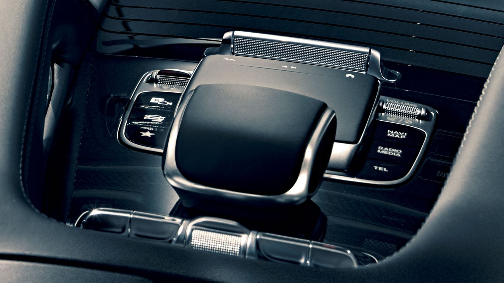Интеллектуальная система управления динамикой автомобиля AMG DYNAMICS предоставляет выбор режимов движения: от высокой комфортабельности в дальних путешествиях до спортивной маневренности. Остается выбрать предустановленные режимы «Комфорт», «Спорт», «Спорт+» или создать свои уникальные настройки в режиме «Индивидуальный».
AMG ACTIVE RIDE CONTROL
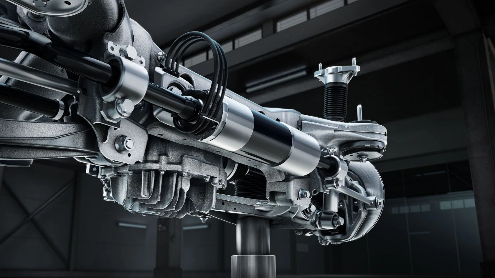Новые модели 63-й серии Mercedes-AMG GLE в серийной комплектации оснащены ходовой частью AMG ACTIVE RIDE CONTROL, которая эффективно компенсирует колебания кузова в любой дорожной ситуации. Даже при спортивных предельных диапазонах управление остается абсолютно контролируемым и точным. Вы получите уникальный опыт управления автомобилем с высокой маневренностью, стабильностью в поворотах и оптимальной тягой.